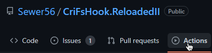
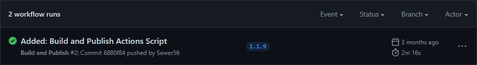
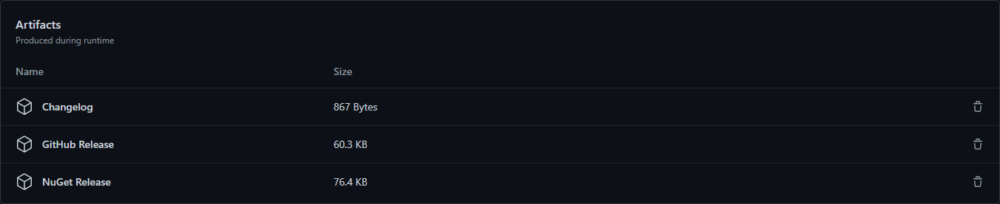
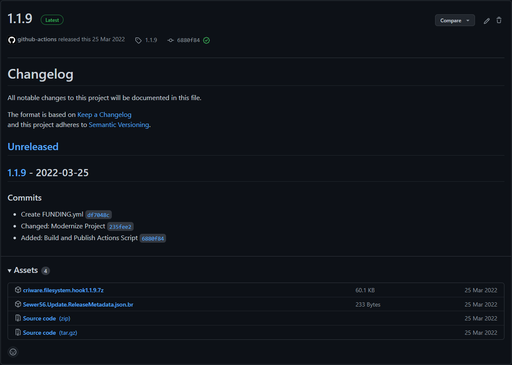

Mod Template Features
Tip
Some features are only available on newer versions of the template.
Publish Script
This template features a built-in publish script that can be used to create releases of your mod.
To run it, open a Powershell prompt in your mod folder and execute the script as such:
.\Publish.ps1
Once the script completes, ready to upload packages will be output to the Publish/ToUpload.
For extended help with the script and examples, consider running:
Get-Help .\Publish.ps1 -Detailed
Delta Updates
Reloaded allows for the creation and usage of delta updates.
A delta update is an update that only requires the user to download the code and data that has changed, not the whole mod all over. It significantly saves on time and bandwidth usage.
# Publish using GitHub Releases as the delta source.
./Publish.ps1 -MakeDelta true -UseGitHubDelta true -GitHubUserName Sewer56 -GitHubRepoName Reloaded.SharedLib.Hooks.ReloadedII -GitHubFallbackPattern reloaded.sharedlib.hooks.zip
# Publish using NuGet as the delta source.
./Publish.ps1 -MakeDelta true -UseNuGetDelta true -NuGetPackageId reloaded.sharedlib.hooks -NuGetFeedUrl http://packages.sewer56.moe:5000/v3/index.json
See Delta Updates on more information about the topic.
Publishing as ReadyToRun
Note
Using ReadyToRun is incompatible with unloadable mods due to a runtime limitation.
If you are using ReadyToRun, you should return false in CanUnload().
If your mod has a lot of code that is executed at startup, consider using ReadyToRun in order to reduce the startup time.
To use ReadyToRun set the BuildR2R flag to true when using the build script.
.\Publish.ps1 -BuildR2R true
R2R is a new type of officially supported file format, which gives a considerable improvement to startup times by shipping native code alongside standard .NET IL code; at the expense of assembly (DLL) size.
You can read more about R2R in the following web resources:
Assembly Trimming Support
Note
Trimming framework-dependent code is not an officially supported .NET feature.
Trimming in Reloaded is a custom feature that uses existing .NET SDK components under the hood.
Danger
Incorrect use of trimming can and will break your mods. When using trimming you should test your mods thoroughly.
Assembly trimming allows you to remove unused code from your mods (and their dependencies), often significantly shrinking the size of the generated DLLs. This in turn improves load times, download size and runtime memory use. At the time of writing, the Reloaded Loader itself and most official & creator made mods use trimming.
Testing Trimming
Testing trimming is performed with included BuildLinked.ps1 in the mod template.
This script will fully wipe the mod output folder and build with trimming.
When the build is done, go test your mod.
Sample output:
Input Assembly: Reloaded.Hooks.Definitions [Mode: link]
Input Assembly: Reloaded.Mod.Interfaces [Mode: link]
Input Assembly: Reloaded.Hooks.ReloadedII.Interfaces [Mode: link]
Input Assembly: Reloaded.Mod.Template [Mode: link]
link indicates the assembly is being trimmed.
` (empty) means trim ifIsTrimmable` == true, else use default trimmer setting [copy].
Configuring Trimming
Trimming can be configured by modifying your .csproj file. The following properties can be used to control the trimming process.
| Reloaded Property | Purpose | Replacement for. |
|---|---|---|
| ReloadedILLink | Enables trimming at publish time. | PublishTrimmed |
| ReloadedLinkRoots | Specifies a DLL/Assembly to be preserved in its entirety. | TrimmerRootAssembly |
| ReloadedLinkAssemblies | Specifies a DLL/Assembly to be force trimmed. | ManagedAssemblyToLink |
Other officially supported properties can be used. For example you could supply an XML Root Descriptor with TrimmerRootDescriptor for more granular control.
Default Trimming Behaviour
The default trimming behaviour used in Reloaded mods replicates the behaviour from .NET 6 (not .NET 7+).
The following general rules apply:
- Only assemblies marked
IsTrimmableare trimmed by default. - Default trimming mode (
TrimMode) islink(remove unused assemblies + code).
General Trimming Guidance
Tip
This is general guidance from personal experience with developing Reloaded.
Doing the following steps is advised for enabling trimming:
- Build with
BuildLinked.ps1. - Add all assemblies with trim warnings to
ReloadedLinkAssemblies. - Build again and test.
Note
If you have marked an assembly to not be trimmed with ReloadedLinkAssemblies, but it still displays a trim warning, feel free to ignore the warning.
Basic trimming now works.
Trimming the Remainder
To further optimise your mod, you can now force trimming on individual libraries.
To do so, perform the following.
-
Inspect the build output:
# Sample Output Input Assembly: Reloaded.Hooks.Definitions [Mode: link] Input Assembly: Reloaded.Mod.Interfaces [Mode: link] Input Assembly: Deez.Nutz.Library [Mode: copy] -
For each library where
Mode != link. - Enable trimming for library (using
ReloadedLinkAssemblies). - Build and test the mod.
- If the mod does not run correctly, remove library from
ReloadedLinkAssemblies.
Automated Builds
If you are using GitHub to host your project, the mod template contains a script for automatically building and uploading your mod for others to download.
It has the following features:
- Automatically build mod for GameBanana, GitHub & NuGet.
- Automatically create changelog (using git commits).
- Automatically upload your mod on tags (releases).
- Creates GitHub Release.
- Uploads to NuGet (if configured).
- If configured correctly, end users will automatically receive update.
You can find and/or modify the script at .github/workflows/reloaded.yml.
Accessing Build Results
To access your automated builds, click the Actions button, select the latest ran workflow and scroll down until you see the Artifacts section.



Please note the Artifacts have a limited lifespan, usually GitHub deletes them after around 30 days.
Automatic Publishing
In order to publish (upload) your mod, simply push a tag to the remote GitHub repository. When the automated build finishes, the script will create a GitHub release and upload the mod to NuGet (if configured).
Example of an automated release:

Publishing to NuGet
Publishing to NuGet requires additional configuration.
- Set a NuGet Feed URL
- Set a NuGet API Key
To set the NuGet feed, open workflows/reloaded.yml and change the NUGET_URL variable. The default is http://packages.sewer56.moe:5000/v3/index.json in which points to the official Reloaded II NuGet repository.
To set the API Key, add a Secret named RELOADED_NUGET_KEY.
Multiple Mods Per Repository
If you want to use the same repository for multiple mods, it is recommended you create a PublishAll.ps1 that runs the publish script multiple times with different parameters.
Here is an example:
# Set Working Directory
Split-Path $MyInvocation.MyCommand.Path | Push-Location
[Environment]::CurrentDirectory = $PWD
./Publish.ps1 -ProjectPath "Reloaded.Universal.Redirector/Reloaded.Universal.Redirector.csproj" `
-PackageName "Reloaded.Universal.Redirector" `
-PublishOutputDir "Publish/ToUpload/Redirector"
./Publish.ps1 -ProjectPath "Reloaded.Universal.Monitor/Reloaded.Universal.Monitor.csproj" `
-PackageName "Reloaded.Universal.Monitor" `
-PublishOutputDir "Publish/ToUpload/Monitor"
./Publish.ps1 -ProjectPath "Reloaded.Universal.RedirectorMonitor/Reloaded.Universal.RedirectorMonitor.csproj" `
-PackageName "Reloaded.Universal.RedirectorMonitor" `
-PublishOutputDir "Publish/ToUpload/RedirectorMonitor"
# Restore Working Directory
Pop-Location
Then modify workflows/reloaded.yml to call PublishAll.ps1 script instead of Publish.ps1 script.
Example repositories with this setup:
- Reloaded.Universal.Redirector
- Heroes.Controller.Hook
- Riders.Controller.Hook
Updating the Mod Template
Tip
To update the template, you can run the command dotnet new update.
Info
If your mod was created using a template older than August 2022, [consider using the following guidance.] (#updating-from-old-template-layout).
To update the mod template, do the following actions:
- Create a new dummy mod (using the same project name as your existing mod).
- Copy all files that aren't Mod.cs and Config.json to your existing mod.
- Update Reloaded.Mod.Interfaces NuGet Package.
- [Optional] Look inside ModConfig.json and .csproj for new fields/properties (for example, ProjectUrl was added in August 2022).
You are done.
Updating from Old Template Layout
Info
Older versions of the mod template (pre Sep. 2022) encouraged editing of the template directly, newer templates take a different approach. Templates can now be swapped out and new features can be applied in Mod.cs and Config.cs.
While not exhaustive, the following guidance can be used to help migrate to the new template format.
Check Default IMod (Program.cs) Settings
Info
Older versions of the mod template (pre Sep. 2022) encouraged editing of the template directly, newer templates take a different approach. Templates can now be swapped out and new features can be applied in Mod.cs and Config.cs.
While not exhaustive, the following guidance can be used to help migrate to the new template format.
Old Defaults:
- CanSuspend: false
- CanUnload: false
- Suspend(), Unload(), Resume(), Disposing(): Empty.
- OnConfigurationUpdated(): Prints to console and assigns to field.
If any of these are non-default in the old IMod implementation (Program.cs), you should move the non-default values to Mod.cs in the new template.
Mod.cs inherits from ModBase which exposes the old methods as overridable virtual functions.
// Add to Mod.cs to override old CanSuspend.
public override bool CanSuspend() => true;
Move User Code from IMod (Program.cs)
The old layout suggested placing custom code under the line which reads:
// Please put your mod code (in the class) below
If you encounter this line, move the code below this line into the constructor of Mod.cs in the new template.
Configuration Migration
Info
If your mod was created before 2022, you will need to migrate where your configurations are stored when using the newer templates.
Previously mods would store configurations in their own folders, however in newer versions a separate dedicated folder is now used.
(You can find it in a mod's right click menu in the launcher).
To migrate your configurations, locate the ConfiguratorMixin class (usually in Config.cs), and add the following method.
public override void Migrate(string oldDirectory, string newDirectory)
{
// Replace Config.json with your original config file name.
TryMoveFile("Config.json");
#pragma warning disable CS8321
void TryMoveFile(string fileName)
{
try { File.Move(Path.Combine(oldDirectory, fileName), Path.Combine(newDirectory, fileName)); }
catch (Exception) { /* Ignored */ }
}
#pragma warning restore CS8321
}
This process can also be used to handle migration for other config modifications such as when TryRunCustomConfiguration() == true.